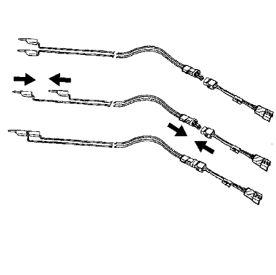

Manipulación y desguace del módulo del airbag
Herramientas especiales
| • | EL-38826 Mazo de cables de activación del SIR |
| • | EL-39401-B Accesorio de activación del SIR |
Si desea informarse sobre herramientas regionales equivalentes, consultar Herramientas especiales .
Módulo del generador de gas con voltaje y sin activar
Advertencia : Consulte Tratamiento del módulo del generador de gas SIR y advertencia de almacenamiento en la sección Prólogo
Preste una atención especial cuando manipule o guarde un módulo de generador sin activar. La activación del módulo del generador de gas hace que se forme gas rápidamente. Como consecuencia, el módulo del generador de gas o un objeto situado enfrente del módulo puede salir expulsado en el caso improbable de que se active el airbag.
Módulo de generador de gas de dos fases
Los módulos de generador de gas de dos fases se activan en dos etapas. Si la fase 1 se utilizó para activar un módulo de generador de gas de dos fases, la fase 2 seguirá habilitada. Por tanto, un módulo de generador de dos fases activado debe seguirse tratando como un módulo activo. Si se debe desechar un módulo de dos fases, debe haber voltaje en los dos circuitos cerrados de activación para desplegar el airbag.
Procedimiento de desguace
Durante la vida útil de un vehículo, pueden darse determinadas situaciones que hagan necesario desechar un módulo de generador de gas con voltaje y sin activar. NO lo deseche a través de los canales de desguace normales hasta que se haya activado el módulo del generador de gas.
No active el módulo del generador de gas en las siguientes situaciones:
| • | Si sustituye un módulo del generador de gas que está bajo garantía, es posible que deba devolverlo sin activar al fabricante. |
| • | Si el vehículo es objeto de una reclamación de responsabilidad de producto relacionada con el sistema SIR y está sujeto a una investigación preliminar, NO debe modificar el sistema SIR de ningún modo. |
| • | Si el vehículo forma parte de una campaña que afecta a los módulos del generador de gas, siga las instrucciones del boletín de servicio de la campaña para observar los procedimientos de manipulación del SIR adecuados. |
Procedimientos de activación
Puede activar el módulo del generador de gas desde el interior o el exterior del vehículo. El método utilizado depende del destino del vehículo. Vea los siguientes procedimientos para determinar cuál funciona mejor en una determinada situación:
Activación fuera del vehículo - Módulo del volante, módulo del cuadro de instrumentos y módulo del raíl del techo
Active el módulo del generador de gas fuera del vehículo si el vehículo debe ponerse en servicio de nuevo. Entre las situaciones que requieren que se active fuera del vehículo figuran las siguientes:
| • | Con el diagnóstico del SIR, se determina que el módulo del generador de gas está averiado. |
| • | El módulo del generador de gas tiene daños estéticos, está rayado o rasgado. |
| • | El cable flexible del módulo del generador de gas está dañado. |
| • | El conector del módulo del generador de gas está dañado. |
| • | Los terminales del conector del módulo del generador de gas están dañados. |
La activación y desguace de un módulo de generador de gas averiado debe respetar el período de retención que sea aplicable.
Advertencia : Consulte Advertencia relacionado con el desecho de módulos generadores de gas del sistema de retención suplementario (SIR) en la sección Prólogo
- Apague el encendido.
Advertencia : Consulte Tratamiento del módulo del generador de gas SIR y advertencia de almacenamiento en la sección Prólogo
- Desmonte el módulo del generador de gas.
- Deje libre un espacio en el suelo de 1,85 m (6 pies) de diámetro para activar el módulo del generador de gas o el accesorio de activación. Si es posible, hágalo en un lugar pavimentado, exterior y sin actividad. En caso contrario, utilice un espacio que no se use del suelo del taller. Asegúrese de que la ventilación es suficiente.
- Aparte cualquier objeto suelto o inflamable de la zona.
Nota: Las activaciones de doble fase se utilizan exclusivamente en los módulos de airbags del volante y del cuadro de instrumentos. Si la fase 1 se utilizó para activar un módulo de generador de gas de dos fases, la fase 2 seguirá habilitada. Si se debe desechar un módulo de dos fases, debe haber voltaje en los dos circuitos cerrados de activación para desplegar el airbag.
- Si desea activar un módulo de generador de gas del volante, coloque el módulo del generador de gas en el centro del espacio con la cubierta embellecedora de vinilo hacia arriba y lejos de la superficie.
- Al activar un módulo de airbag del cuadro de instrumentos, respete las siguientes instrucciones:
| 6.1. | Coloque el accesorio EL-39401-B en el centro de la zona despejada. |
| 6.2. | Llene el accesorio de activación de agua o arena. |
| 6.3. | Con las tuercas y pernos adecuados, monte el módulo del airbag del cuadro de instrumentos (1) en el accesorio de activación (2) con el embellecedor de vinilo hacia arriba. |
| 6.4. | Apriete firmemente todos los fijadores que sujetan el módulo del airbag del cuadro de instrumentos (1) al accesorio de activación (2). |
- Para activar un módulo del raíl del techo, observe las instrucciones siguientes:
| 7.1. | Coloque el accesorio EL-39401-B (3) en el centro de la zona despejada. |
| 7.2. | Llene el accesorio de activación con agua o arena para que esté suficientemente estable durante la activación. |
| 7.3. | Ajuste y fije los brazos del accesorio (4) en el accesorio de activación (3) con las tuercas y pernos adecuados. |
| 7.4. | Sujete el módulo del raíl del techo en el accesorio de activación y apriete firmemente todos los fijadores. |

- Inspeccione el mazo de cables El-38826 y el adaptador del cable flexible (2) para ver si está dañado. Sustituya si es necesario.
- Cortocircuite los 2 cables del mazo de activación del SIR (1) uniéndolos con un conector puente colocado entre ellos.
- Conecte el adaptador del cable flexible apropiado (2) al mazo de cables de activación del SIR (1).
- Extienda el mazo de cables y el adaptador del SIR todo lo que se pueda desde el accesorio o la zona de activación.
Nota: En un módulo de generador de gas de dos fases, deben fijarse los dos conectores en el adaptador del mazo de cables de activación. De este modo se garantizará que los dos circuitos de activación, el de la fase 1 y el de la fase 2, tengan voltaje, independientemente de su estado de activación.
- Conecte el módulo del generador de gas (1) al adaptador (2) en el mazo de cables de activación del SIR (3).
Nota:
| • | La expansión rápida del gas implicado en la activación de un módulo del generador del gas es muy ruidosa. Avise a todas las personas que estén cerca de que va a activar el módulo del generador de gas. |
| • | Cuando el módulo del generador de gas se activa, el accesorio de activación puede saltar unos 30 cm (1 pie) verticalmente. Se trata de una reacción normal del módulo del generador de gas ocasionada por la fuerza de la expansión rápida del gas dentro del módulo del generador de gas. |
| • | Si activa un módulo del generador de gas con la fase 1 ya activada, es posible que el accesorio no se mueva y el ruido sea menor. |
- Asegúrese de que no hay nadie en la zona.

- Separe los 2 conectores puente del mazo de cables de activación del SIR que se cortocircuitaron antes en este procedimiento.
- Coloque una fuente de alimentación mínima de 12 V/2 A, como la batería de un vehículo, cerca del lado cortocircuitado del mazo de cables.
- Conecte los cables del mazo de activación del SIR a la fuente de alimentación. El módulo del generador de gas se activará en cuanto haya contacto.

- Desconecte el mazo de cables de activación del SIR de la fuente de alimentación cuando el módulo del generador de gas se haya activado.
- Si el módulo del generador de gas no se ha activado, desconecte el adaptador, detenga el procedimiento y póngase en contacto con el Grupo de Asistencia Técnica.
Si la activación se realiza correctamente, continúe con los siguientes pasos.
Advertencia : Consulte Advertencia que notifica que los módulos generadores de gas del SIR están calientes en la sección Prólogo
- Coloque un conector puente en el otro extremo para cortocircuitar los cables del mazo de activación.
- Póngase un par de guantes de taller.
- Desconecte el adaptador del cable flexible del módulo del generador de gas en cuanto sea posible.
- Inspeccione el adaptador del cable flexible y el mazo de cables de activación del SIR. Sustituya si es necesario.
- Deseche el módulo del generador de gas activado por los canales de desguace normales.
- Lávese las manos con un jabón suave.
Activación dentro del vehículo - Procedimiento de desguace del vehículo
Active los módulos del generador de gas dentro del vehículo cuando lo deba desguazar o sólo quiera recuperar las piezas. Esto incluye, entre otras, las siguientes situaciones:
| • | El vehículo ha completado su vida útil. |
| • | El vehículo ha sufrido daños irreparables en un accidente sin desactivación de airbags. |
| • | El vehículo ha sufrido daños irreparables durante un robo. |
| • | El vehículo se desea desmontar para aprovechar las piezas en un vehículo con otro VIN, en lugar de restaurarlo con el mismo VIN. |
Advertencia : Consulte Advertencia: activación del módulo inflable SIR en el exterior del vehículo en la sección Prólogo
- Baje las ventanillas del conductor y el acompañante.
- Gire el interruptor de encendido a la posición OFF y extraiga la llave de encendido.
- Compruebe que todos los módulos del generador de gas que se desea activar están montados de forma segura.
- Quite todos los objetos sueltos de los asientos delanteros.
Advertencia : Un módulo generador de gas de dos etapas activado tiene el mismo aspecto si se usa una o ambas etapas. Asuma siempre que un módulo generador de gas de dos etapas activado tiene una 2ª etapa activada. Un manejo o uso inadecuado puede activar el módulo generador de gas y provocar lesiones personales.
- Desenchufe el conector amarillo del módulo del volante (1) del conector amarillo del mazo de cables del vehículo (3).

Nota: Si el vehículo está equipado con airbags de dos fases, el módulo del volante y el módulo del cuadro de instrumentos tendrán 4 cables cada uno. Consulte Vista del extremo del conector del componente para hallar los circuitos alto y bajo.
- Corte el conector amarillo del mazo de cables del vehículo dejando al menos 16 cm (6 pulgs.) de cable en el conector.
- Corte 13 mm (0,5 pulgs.) de aislamiento de cada uno de los cables del conector.

- Corte dos cables de activación de 6,1 m (20 pies) de un cable de varios hilos de 0,8 mm (calibre 18) o más grueso. Utilice estos cables para fabricar el mazo de cables de activación del conductor.
- Corte 13 mm (0,5 pulgs.) de aislamiento de los dos extremos de los cables.
- Una los extremos de los cables para cortocircuitarlos. Los cables de desactivación deben seguir cortocircuitados y sin conectarse a una fuente de alimentación hasta que esté listo para activar el módulo del generador de gas.
- Una entre sí los 2 cables del conector de los circuitos de voltaje alto de las dos fases del módulo del volante y luego a un grupo de cables de activación. Consulte Vista del extremo del conector del componente para conocer los circuitos correctos.
- Inspeccione que la conexión de los 3 cables es segura.
- Fije y aísle la conexión de 3 cables al mazo de cables de activación con cinta aislante.
- Una entre sí los 2 cables del conector de los circuitos de voltaje bajo de las dos fases del módulo del volante y luego a un grupo de cables de activación. Consulte Vista del extremo del conector del componente para conocer los circuitos correctos.
- Inspeccione que la conexión de los 3 cables es segura.
- Fije y aísle la conexión de 3 cables al mazo de cables de activación con cinta aislante.
- Conecte el mazo de cables de activación al conector del módulo del volante.
- Dirija el mazo de cables de activación hacia fuera del lado del conductor del vehículo.
- Desenchufe el conector amarillo izquierdo del mazo de cables del raíl del techo del conector del mazo de cables del vehículo.
- Corte el conector del mazo de cables del vehículo dejando al menos 16 cm (6 pulgs.) de cable en el conector.
- Corte 13 mm (0,5 pulgs.) de aislamiento de cada uno de los cables del conector.
- Corte dos cables de activación de 6,1 m (20 pies) de un cable de varios hilos de 0,8 mm (calibre 18) o más grueso. Estos cables se utilizarán para fabricar el mazo de cables de activación del airbag del raíl del techo.
- Corte 13 mm (0,5 pulgs.) de aislamiento de los dos extremos de los cables.
- Una los extremos de los cables para cortocircuitarlos.
- Una entre sí los cables del conector para formar un cable de activación.
- Fije y aísle la conexión con cinta aislante.
- Una entre sí y líe con cinta aislante el otro hilo del conector junto con el hilo de activación restante.
- Conecte el mazo de cables de activación al conector amarillo del módulo del raíl del techo.
- Dirija el mazo de cables de activación hacia fuera del lado del conductor del vehículo.
- Desenchufe el conector amarillo del mazo de cables del módulo del cuadro de instrumentos (1) del conector del mazo de cables del vehículo (2).
Nota: Si el vehículo está equipado con airbags de dos fases, el módulo del volante y el módulo del cuadro de instrumentos tendrán 4 cables cada uno. Consulte Vista del extremo del conector del componente para hallar los circuitos alto y bajo.
- Corte el conector amarillo del mazo de cables del vehículo dejando al menos 16 cm (6 pulgs.) de cable en el conector.
- Corte 13 mm (0,5 pulgs.) de aislamiento de cada uno de los cables del conector.
- Corte dos cables de activación de 6,1 m (20 pies) de un cable de varios hilos de 0,8 mm (calibre 18) o más grueso. Estos cables se utilizarán para fabricar el mazo de cables de activación del acompañante.
- Corte 13 mm (0,5 pulgs.) de aislamiento de los dos extremos de los cables.
- Una los extremos de los cables para cortocircuitarlos.
- Una entre sí los 2 cables del conector de los circuitos de voltaje alto de las dos fases del módulo del cuadro de instrumentos y luego a un grupo de cables de activación. Consulte Vista del extremo del conector del componente para conocer los circuitos correctos.
- Inspeccione que la conexión de los 3 cables es segura.
- Fije y aísle la conexión de 3 cables al mazo de cables de activación con cinta aislante.
- Una entre sí los 2 cables del conector de los circuitos de voltaje bajo de las dos fases del módulo del cuadro de instrumentos y luego a un grupo de cables de activación. Consulte Vista del extremo del conector del componente para conocer los circuitos correctos.
- Inspeccione que la conexión de los 3 cables es segura.
- Fije y aísle la conexión de 3 cables al mazo de cables de activación con cinta aislante.
- Conecte el mazo de cables de activación al conector en línea del módulo del cuadro de instrumentos.
- Dirija el mazo de cables de activación hacia fuera del lado del acompañante del vehículo.
- Desenchufe, del conector del mazo de cables del vehículo, el conector amarillo del mazo de cables del airbag del raíl del techo de la derecha.
- Corte el conector del mazo de cables del vehículo dejando al menos 16 cm (6 pulgs.) de cable en el conector.
- Corte 13 mm (0,5 pulgs.) de aislamiento de cada uno de los cables del conector.
- Corte dos cables de activación de 6,1 m (20 pies) de un cable de varios hilos de 0,8 mm (calibre 18) o más grueso. Estos cables se utilizarán para fabricar el mazo de cables de activación del airbag del raíl del techo.
- Corte 13 mm (0,5 pulgs.) de aislamiento de los dos extremos de los cables.
- Una los extremos de los cables para cortocircuitarlos.
- Una entre sí los cables del conector para formar un cable de activación.
- Fije y aísle la conexión con cinta aislante.
- Una entre sí y líe con cinta aislante el otro hilo del conector junto con el hilo de activación restante.
- Conecte el mazo de cables de activación al conector amarillo del módulo del raíl del techo.
- Dirija el mazo de cables de activación hacia fuera del lado del acompañante del vehículo.
- Tape por completo la abertura del parabrisas y de la ventanilla de la puerta delantera con un trapo.
- Estire por completo todos los cables del mazo de activación del lado derecho del vehículo.
- Despliegue cada uno de los circuitos de activación de uno en uno.
- Coloque una fuente de alimentación mínima de 12 V/2 A, como la batería de un vehículo, cerca del lado cortocircuitado de los mazos de cables.
- Separe un grupo de cables y ponga en contacto sus extremos con la fuente de alimentación para activar el módulo de generador de gas seleccionado.
- Desconecte el mazo de cables de activación de la fuente de alimentación y una los extremos de los cables.
- Repita el mismo proceso con el resto de mazos de cables de activación.
- Desenchufe todos los mazos de cables del vehículo.
- Deseche los mazos de cables.
- Desguace el vehículo como si no estuviera equipado con el sistema SIR.
- Si no se activa uno o todos los módulos del generador de gas, desmonte del vehículo los módulos que no se hayan activado.
| © Copyright Chevrolet Europe. All rights reserved |